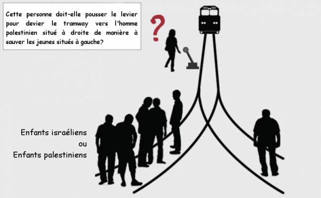

Every year, new words and expressions are born or revived in a public debate constantly stirred by the evolution of techniques and societies. Language exerts considerable, often implicit, influence on the formation of opinions, leading to an ongoing need to clarify its meaning and measure its impact.
Following the killings in France in 2015, an expression has become an almost indispensable term to denote our public enemy number one: the ‘brain behind the attacks,’ this depersonalized and multifaceted threat that thrives at times in Salafist mosques, at other times in the suburbs of Saint-Denis, and at other times in Syria.
Adopted by most of the media and numerous politicians, the ‘brain behind the attacks’ is one of those ready-made expressions that primarily reflect the difficulty, if not the abandonment, of thinking about terrorism beyond clichés and misleading rhetoric.

A Brain for Ten Terrorists?
Taken literally, searching relentlessly for the brain behind attacks committed by a dozen individuals is akin to denying the existence of a unique psychology in those who acted. It reduces these suicide bombers to puppets whose brains are washed by an occult intelligence, external to our society and foreign to our culture. Dangerous due to its implicit nature, this representation of the situation is problematic at a time when we seek to deradicalize and thus understand the tiny fraction of French youth inclined toward ‘minor jihad’.
Yet there are reasons for hope. Over the past decade, some researchers have rigorously studied the determinants of terrorist violence. Simultaneously, neurobiologists and psychologists have made significant progress in understanding violent and antisocial behaviors. It is urgent that this knowledge enter the public debate, be considered by institutions, and be subject to serious investigation. This is also the aim of the call published on November 18, 2015 by Alain Fuchs, president of CNRS.
Is the ‘Brain Behind the Attacks’ a ‘Sick Brain’?
Although it is morally justifiable and understandable, the lexicon of madness and alienation (‘madmen’, ‘monsters’, ‘sick’, etc.) used to describe terrorists is rarely justified clinically. Indeed, numerous retrospective studies on IRA (Ireland), ETA (Basque Country), or Al-Qaeda fighters show that terrorists—whether Islamist or not—are most often within the ‘normal distribution’ concerning psychiatric pathologies, social origin, or education [PDF]. In other words, there is no psychiatric, psychological, or socio-economic profile that is typical of a suicide terrorist.
Established and accepted in a report submitted to the U.S. Congress as early as 1999 [PDF, page 40], this observation has also been discussed in the prestigious journal Science [PDF, PDF] under the impetus of Scott Atran. A pioneer in terrorism research, this Franco-American anthropologist also reminds us that the ‘success’ associated with jihadist engagement on Twitter or Facebook constitutes a motivation as simple as it is powerful for martyr candidates, sensitive to the respect and admiration aroused in some by their morbid project (see Atran’s intervention to the UN Security Council, in English, and the French report associated with it).
A Paradoxical Altruism
Psychologically, suicide bombing is more akin to what researchers call ‘altruistic punishment’ than to the murderous insanity responsible for the numerous shootings observed in the United States. The latter is often linked to a pre-existing mental pathology, which explains Barack Obama’s efforts to strengthen gun control for individuals suffering from psychiatric illnesses. In contrast, altruistic punishment involves incurring a cost to restore a social norm (of cooperation or otherwise) that one considers more significant than personal interest. The support of other group members and the role of social norms play an important role in such behaviors.
Thus, whether terrorists aspire to Sharia or democratic sovereignty in Islamic lands makes little difference, as the support (real or presumed) of the social group to which they identify seems to be the primary cause of their actions. This is also why bidirectional exchange between Arab-Muslim and Judeo-Christian cultures is the first remedy against terrorism. Symbolized by the opening of synagogues, churches, and mosques or by the tolerance of religious symbols such as the kippah, the cross, and the veil, the construction of a sense of belonging to French society heavily depends on citizens’ ability to understand the emotions and moral feelings driving others beyond their usual social circle.
Although religious affiliation plays a crucial role since it overrides national belonging in the jihadists’ imagination, research shows that they are not born or raised in more religious environments than average [PDF]. A study conducted in Palestine even suggests that despite its ability to segment humanity into communities of beliefs, religious sentiment itself does not predispose one to view terrorism as a morally just cause.

Adapting the famous ‘trolley problem’, researchers asked over 1000 young people whether it would be just to kill a Palestinian to save five Israelis or five Palestinians. The first group was asked to decide directly on the best course of action. The second group was asked which decision God would approve of the most. Contrary to the belief that religious beliefs are the epicenter of inter-ethnic violence, the second group was clearly more inclined than the first to sacrifice the Palestinian man to save Israeli lives…
Can Violent Deviations Be Prevented Using Neuroscience?
If the terrorist is distinguished neither by their mental state, religiosity, education level, nor beliefs, how can we initiate neurobiological reflection? Let’s perhaps start with what makes a jihadist a criminal: premeditated violence and the act itself.
Scientifically, premeditated violence corresponds to proactive aggression, as opposed to reactive aggression. The causes and consequences of these two phenomena are very different. In 2015, a study conducted with over 250 adolescents showed that proactive violence might reflect a desire to attain high social status, while reactive violence would denote a low social status [PDF]. Moreover, while proactive violence is not or is only slightly dependent on circulating cortisol levels (the stress hormone), reactive violence is strongly dependent on them. Finally, proactive aggression results more from a difficulty in experiencing emotions, while reactive aggression stems from an inability to regulate these emotions.
At the cerebral level, these findings translate in proactive violent individuals as hypo-reactivity of a central structure for emotions, the amygdala. In reactive violent individuals, on the other hand, there is an observed hyper-reactivity of the same structure. Pursuing a promising research avenue, a research group even showed that mild electrical stimulation of the anterior prefrontal cortex reduced levels of proactive aggression but had no effect on levels of reactive aggression.

Given that stimulation of the anterior prefrontal cortex also modifies how individuals perceive dominance relationships with others, these results may reinforce the link between proactive violence and the quest for social status (see also the thesis defended by the author of this blog, PDF, pp. 241-246).
Will it one day be possible to prevent deviations by treating perpetrators of violent acts early using this technique? Clinical trials may answer this question in the next two decades. In the meantime, it is important to remember that the visibility of laboratory studies is limited, as the most ‘violent’ experimental protocols use only small, low-intensity electric shocks with no consequences.
Syndrome E, Amphetamines, and Psychopathy
Nearly 20 years ago, neuroscientist Itzhak Fried already suggested that individuals capable of killing coldly stand out less for dysfunctional reasoning than for a ‘cognitive fracture’ between emotional and decision-making processes [PDF]. This fracture would lead to what Fried called ‘Syndrome E,’ related to psychopathy, which combines a lack of empathy with various emotional changes.
Moreover, without profoundly altering free will or intent as some widespread fantasy might suggest, cocaine and amphetamines used by some jihadists can nevertheless facilitate the act and composure. Prior to the act itself, because they affect the dopaminergic system and alter the activities of the amygdala, these psychostimulants somewhat mimic psychopathy and induce significant narcissism, excessive self-confidence, and heightened sensitivity to issues of social dominance. The encounter with these substances may therefore play a role in personality changes that precede or accompany radicalization.
Conclusion
In conclusion, we hope to have demonstrated that research into the causes of terrorism, at both the individual and social group levels, is feasible, desirable, and that its findings sometimes directly oppose certain preconceived ideas about the phenomenon. This is why the notion that the only brains that matter are those we have yet to kill or imprison is particularly deadly.
By focusing our attention on this elusive ‘brain behind the attacks’ that supposedly hops between the bombs of our Rafales, we lose sight of the essential: the causes that led some French people to sacrifice their lives to punish the people they are supposed to belong to. Just like the real-fake ‘closure of borders’ enacted and then canceled by François Hollande on the evening of November 13, or the absurd debate on ‘nationality revocation,’ the hunt for the ‘brain behind the attacks’ fits into a subtle game of semantic shifts that likely serve the electoral ambitions of some but also oppose intelligent counter-terrorism efforts.